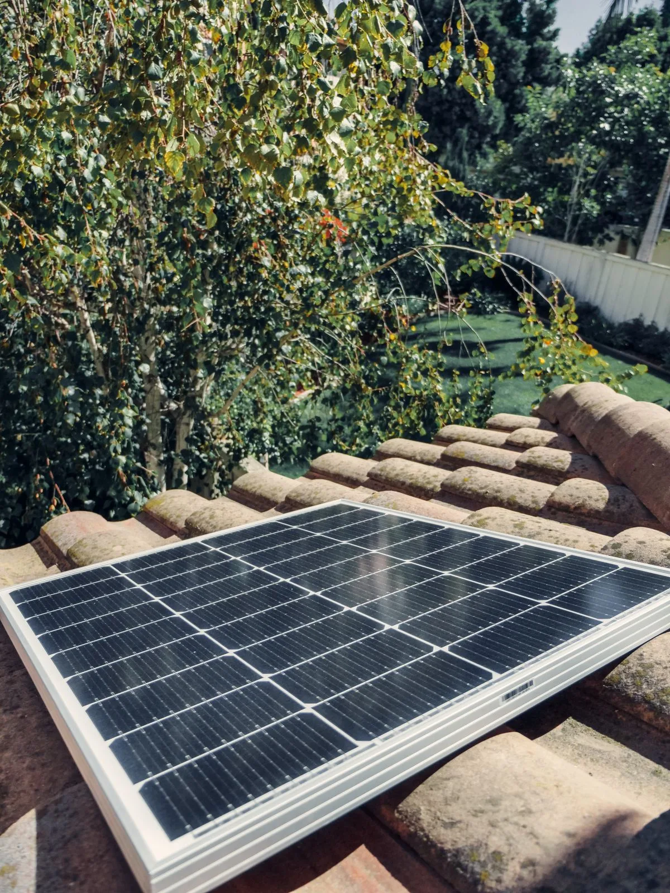
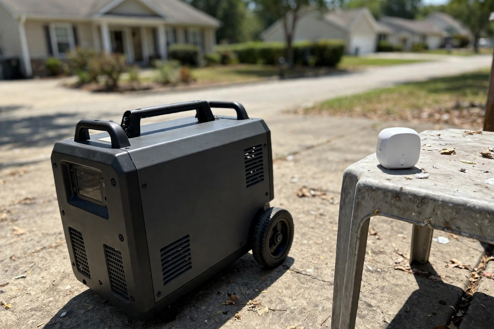

Best Large Power Stations for Whole-Home Backup: EcoFlow, Anker and Jackery Compared
Which large power station should I buy for home backup?
Three stations anchor the 2kWh-and-up class: the EcoFlow DELTA Pro 3, the Anker SOLIX F3800 and the Jackery Explorer 5000 Plus. All three store between roughly 3.8 and 5kWh, all three put out both 120V and 240V power from a single unit — the thing that unlocks well pumps and larger air conditioners — and all three can grow with extra batteries. They differ on output, weight and recharge speed: the EcoFlow is the lightest and quietest here with the fastest wall recharge, the Anker has the most output per unit and the deepest single-unit expansion, and the Jackery starts with the biggest battery and the most output of all. Read the whole-home section below before you buy any of them: in this class, "whole-home" means your essential circuits, not literally everything in the house at once.
Our pick: EcoFlow DELTA Pro 3 (4,096Wh) — the most balanced of the three for most homes: 4,000W of 120/240V output, the fastest wall recharge here (0–80% in 50 minutes on EcoFlow's fastest charging setup), the only published noise figure in the class (as low as 30 dB under a 2,000W load), and at 113.5 lbs the lightest of the three — still a roll-it, don't-carry-it machine. It grows to 12kWh with two extra batteries.
Check price on AmazonAffiliate link to be added after approval. No price shown here — check it on Amazon.
At a glance
| Product | Best for | Check price |
|---|---|---|
| EcoFlow DELTA Pro 3 | Quietest, lightest here, fastest wall recharge | Link pending |
| Anker SOLIX F3800 | Most output per unit, deepest expansion | Link pending |
| Jackery Explorer 5000 Plus | Biggest starting battery, most output overall | Link pending |

We may earn a commission if you buy through links on this page. As an Amazon Associate I earn from qualifying purchases.
What you need
The three current whole-home flagships from EcoFlow, Anker and Jackery — the class above the roughly-1,000Wh stations in our mid-size guide. One change from the line-ups you may have seen last year: Jackery's entry is the Explorer 5000 Plus, not the older Explorer 3000 Pro. The 3000 Pro is no longer sold new through Jackery's US store (its own page for the model is a refurbished listing), and it is a 120V-only machine with an older battery chemistry — the 5000 Plus is the model Jackery sells for whole-home backup now. Every model here is LiFePO4, every model outputs 240V as well as 120V from the single unit, and every model is a two-person-or-wheels proposition: the lightest weighs 113.5 lbs. No prices here on purpose — this is the most expensive class of power station we cover, so check the price on Amazon and check stock before storm season, not during it.
EcoFlow DELTA Pro 3 (4,096Wh)
A 4,096Wh LiFePO4 battery rated for 4,000 cycles to 80% capacity, in an IP65-rated battery pack. Output is 4,000W continuous at 120V or 240V (8,000W surge), with EcoFlow's X-Boost mode running resistive loads up to 6,000W. The outlet set is the most complete here: four 120V household outlets, an RV TT-30R, a 240V 6-20R and an L14-30R split-phase socket for an inlet box or transfer switch. It expands to 12kWh with two DELTA Pro 3 Extra Batteries, and up to three units combine through the Smart Home Panel 2 for 36kWh of system capacity. Solar input is the highest here at 2,600W across two ports. EcoFlow rates the recharge at 0–80% in 50 minutes on its fastest charging setup; on a standard US wall outlet the grid charging port is capped at 120V and 2,000W, so a full charge from the wall takes longer. Switchover in an outage is 10ms, noise is as low as 30 dB under a 2,000W load, and it carries a 5-year warranty. At 113.5 lbs on wheels with a pull handle, it is the lightest of the three.
Watch out: Lightest here still means 113.5 lbs — it rolls, it does not get carried up stairs. The 120V and 240V outputs cannot run at the same time: one button or the other, per EcoFlow's own FAQ. The lowest continuous output of the three (4,000W) means big simultaneous loads need more care, X-Boost is for resistive loads like heaters and kettles rather than a true 6,000W for everything, and several settings — including external GFCI support — live in the EcoFlow app, so the unit leans on your phone more than the spec sheet suggests.
Check price on AmazonAffiliate link to be added after approval. No price shown here — check it on Amazon.
Anker SOLIX F3800 (3,840Wh)
A 3,840Wh LiFePO4 battery rated for 3,000 cycles to 80% capacity. The strongest output per unit here: 6,000W continuous at 120V/240V with a 9,000W surge, through four household outlets, an L14-30 and a TT-30R RV outlet, plus three 100W USB-C ports. Expansion is its headline: up to six BP3800 expansion batteries take a single unit to 26,880Wh — the deepest single-unit growth of the three — and two units can pair for double the output. Solar input is 2,400W across two ports, and Anker rates a full solar charge at about 1.5 hours to 80% in strong sun. Wall charging is 1,800W in the US, and Anker's published figure is a full charge in about 2.7 hours. The UPS switchover is under 20ms. It weighs 132.3 lbs on casters and wheels.
Watch out: At 132.3 lbs it is a heavy, two-person move despite the wheels, and Anker states plainly that it is not waterproof — it lives indoors or under cover. Anker does not publish a noise rating for the F3800, so if a quiet bedroom matters, know that the number is Anker's to withhold, not ours to guess. The UPS function covers only the designated outlets and pass-through power is limited while the unit is plugged in, so it is a device-level UPS, not a whole-panel one, and the full feature set runs through the Anker app.
Check price on AmazonAffiliate link to be added after approval. No price shown here — check it on Amazon.
Jackery Explorer 5000 Plus (5,040Wh)
The biggest starting battery and the most output of the three: a 5,040Wh LiFePO4 pack rated for 4,000 cycles to 70%+ capacity, and 7,200W of total AC output (14,400W surge) at 120V and 240V through an L14-30R/14-50 socket, plus four 120V outlets. Expansion is the deepest here in total: up to five Battery Pack 5000 Plus units take one station to about 30.2kWh, and two stations joined through Jackery's Smart Transfer Switch reach about 60kWh. Its UPS modes are the strongest on paper — an online UPS mode with 0ms switchover and a backup mode under 20ms. Solar input is rated up to 4,000W across its high- and low-voltage inputs. Wall charging from a standard 120V outlet runs at up to about 1,800W and takes roughly 3.5 hours to full; 240V charging at up to 4,000W through the Smart Transfer Switch cuts a full charge to about 1.7 hours. It weighs about 134.5 lbs on wheels with a retractable handle.
Watch out: The heaviest unit here at about 134.5 lbs, and the slowest wall recharge of the three on a normal 120V outlet — the fast 240V charge needs the Smart Transfer Switch, which is sold separately, as is the hardware for wiring it into home circuits. Jackery does not publish a dB noise rating for this model. Its cycle-life rating is quoted to 70%+ remaining capacity where EcoFlow quotes 80%, and like the others, the full feature set leans on the Jackery app.
Check price on AmazonAffiliate link to be added after approval. No price shown here — check it on Amazon.
What "whole-home backup" really means
Every maker in this class prints "whole-home" on the box, and every one of them means something narrower by it. Here is the plain version. A single unit here stores about 4 to 5kWh. A typical house uses far more than that in a day, so no single unit runs a whole house the way the grid does — everything on, all at once, for as long as you like. Run an electric range, a dryer, a water heater and central air together and even the biggest battery here is empty in a few hours.
What these stations genuinely do — and do well — is run the essential circuits: the fridge and freezer, lights, Wi-Fi, phones, a furnace blower or boiler controls, a well pump, medical gear, a TV and a few outlets. Chosen carefully, that load is a few hundred watts most of the time, and 4 to 5kWh carries it through the night; add extra batteries or a day of solar and it carries for days. The 240V output is the real step up from smaller stations: it is what lets one unit start a well pump or a larger air conditioner that a 120V-only station cannot touch. The convenient version of this setup runs through a transfer switch, inlet box or smart panel wired in by an electrician, so the chosen circuits switch over without extension cords. Budget for that hardware and that electrician visit on top of the station — neither is included — and size the battery to your essential load list, not to the words on the box.
How to pick
- Write the essential load list first. Fridge, freezer, furnace blower, well pump, Wi-Fi, lights, phones, medical gear — add up their running watts and, more importantly, how many hours a day each actually runs. That list, not the marketing, decides whether 3,840Wh is plenty or 5,040Wh plus extra batteries is the honest buy. Our whole-home section above explains why "everything at once" is the wrong test.
- Check the 240V loads by name. All three output 240V from one unit, but the details differ: EcoFlow splits its outlets — the 120V set and the 240V set do not run at the same time — while the Anker and Jackery feed both voltages together. If a well pump or a 240V air conditioner is the reason you are buying, confirm your appliance's starting draw against the surge rating: 8,000W on the EcoFlow, 9,000W on the Anker, 14,400W on the Jackery. EcoFlow's own page notes its 3-ton central AC figure was tested with a soft starter fitted — budget for one if your AC is stubborn to start.
- Size the growth path, not just the first battery. The cheapest way into this class is the base unit; the expensive mistake is a base unit that cannot grow. Per unit, the EcoFlow reaches 12kWh, the Anker 26,880Wh and the Jackery about 30.2kWh. If a multi-day outage is a real scenario where you live, expansion headroom matters more than a few hundred watt-hours today.
- Treat recharge speed as two different numbers. The headline times assume the fastest setup: EcoFlow's 0–80% in 50 minutes and Jackery's roughly 1.7-hour full charge both need more than a standard wall outlet — Jackery's needs 240V charging through its transfer switch. On a plain 120V outlet the three take roughly 2.7 to 3.5 hours for a full charge, the Anker fastest of the three on Anker's own published figure. In an outage, solar input is the recharge that still works: 2,400W to 4,000W of accepted panels is a real difference across a long, sunny day.
- Plan where 110-plus pounds will live. All three roll on wheels and all three are effectively furniture: pick the spot — near the panel if you are wiring a transfer switch, near the fridge if you are not — before it arrives, and measure the doorway. None of them is a carry-it-to-the-car camping station, whatever the handle suggests.

Photos still needed
No hands-on test photos exist yet for this guide. Still missing — needs real at-home photos of the actual models:
- Each station beside a fridge for a true size sense
- Each station connected to a transfer switch or inlet box, cables shown
- Each display while running a fridge and furnace blower together
- An expansion battery connected to each station
Comparison
| Specification | EcoFlow DELTA Pro 3 | Anker SOLIX F3800 | Jackery Explorer 5000 Plus |
|---|---|---|---|
| Capacity | 4,096Wh | 3,840Wh | 5,040Wh |
| Battery | LiFePO4, 4,000 cycles to 80% | LiFePO4, 3,000 cycles to 80% | LiFePO4, 4,000 cycles to 70%+ |
| AC output | 4,000W continuous (8,000W surge), 120V/240V — the two voltages do not run at the same time | 6,000W continuous (9,000W surge), 120V/240V | 7,200W total (14,400W surge), 120V/240V |
| Expandable | Yes — to 12kWh per unit (2 extra batteries); 36kWh across 3 units via Smart Home Panel 2 | Yes — to 26,880Wh per unit (6 expansion batteries) | Yes — to about 30.2kWh per unit (5 battery packs); about 60kWh with 2 units |
| Fastest wall recharge | 0–80% in 50 min (fastest charging setup); US wall port capped at 120V / 2,000W | Full charge in about 2.7 hrs at 1,800W (Anker's published figure) | About 3.5 hrs at 120V; about 1.7 hrs at 240V via Smart Transfer Switch (sold separately) |
| Solar input | Up to 2,600W (two ports) | Up to 2,400W (two ports) | Up to 4,000W (high- and low-voltage inputs) |
| Weight | 113.5 lbs | 132.3 lbs | About 134.5 lbs |
| UPS / pass-through switchover | 10ms | Under 20ms (designated outlets only) | 0ms online UPS mode; under 20ms backup mode |
| Noise | As low as 30 dB under a 2,000W load (EcoFlow's figure) | Not published by Anker | Not published by Jackery |
How we picked
These three are the current whole-home models in the 2kWh-and-up class from EcoFlow, Anker and Jackery — each maker's single-unit 120/240V flagship that a homeowner can buy today. Jackery's older Explorer 3000 Pro was left out on purpose: Jackery no longer sells it new through its US store, it is 120V-only, and its battery is an older lithium-ion chemistry rather than LiFePO4; the Explorer 5000 Plus is its current equivalent. Every specification in this guide comes from the manufacturers' own product pages, support pages and user manuals, listed in Sources below, checked 24 November 2026. Where a maker does not publish a figure — the Anker and Jackery noise ratings — the table says so instead of filling the gap.
| Products compared in this guide | Manufacturers | Hands-on tests run |
|---|---|---|
| 3 | 3 | 0 — none yet |
What we have not done yet: no product in this guide has been tested hands-on by us. When we test one at home, this box will say so, with the date.
Troubleshooting
The station shuts down when the air conditioner or well pump starts
Motors and compressors draw a starting burst far above their running watts. Check the appliance's starting draw against the station's surge rating, not its continuous output, and start the big motor with everything else off. If it still trips, a soft starter on the AC is the standard fix — EcoFlow's own page notes its 3-ton central AC result was achieved with a soft starter fitted, which tells you the makers expect one on larger units.
It charges much slower than the headline time
Check which charging setup the headline assumes. EcoFlow's 50-minute figure is its fastest multi-charge setup — on a standard US wall outlet the DELTA Pro 3's grid port is capped at 120V and 2,000W. Jackery's roughly 1.7-hour full charge needs 240V charging through the Smart Transfer Switch; on a 120V outlet it is roughly 3.5 hours. The Anker's 1,800W US wall input is the ceiling whatever the weather, and solar times on all three assume the maximum panel wattage in full sun.
The 240V outlet is dead but the household outlets work
On the EcoFlow this is by design: the 120V and 240V outputs cannot run at the same time — one AC button or the other, per EcoFlow's FAQ. On the Anker, the L14-30 outlet is unavailable while the unit is plugged in and running in UPS mode, where only the designated outlets carry pass-through power. Check the mode before you assume a fault.
Frequently asked questions
Can one of these really run a whole house?
It can run the parts of a house that matter in an outage — fridge, lights, Wi-Fi, furnace blower, phones, a TV and a few outlets — for hours, and for a day or more with extra batteries or solar coming in. It cannot run literally everything at once: central air, an electric range, a dryer and a water heater together will drain even the biggest unit here in a few hours. Whole-home backup with a power station means chosen essential circuits, usually through a transfer switch or inlet box, not the whole panel at full blast.
Which of the three is the quietest?
Only EcoFlow publishes a noise figure for this class: as low as 30 dB under a 2,000W load for the DELTA Pro 3, thanks to its X-Quiet design. Anker does not publish a dB rating for the SOLIX F3800, and Jackery does not publish one for the Explorer 5000 Plus, so there is no honest number to compare for those two. All three are fan-cooled and far quieter than a fuel generator, and all three can run indoors, which no fuel generator can.
Which one grows the most if I add batteries later?
The Jackery Explorer 5000 Plus grows most on a single unit — up to five battery packs take it to about 30.2kWh, and two units together reach about 60kWh. The Anker SOLIX F3800 takes up to six expansion batteries for 26,880Wh. The EcoFlow DELTA Pro 3 takes two extra batteries for 12kWh per unit, and up to three units can combine through EcoFlow's Smart Home Panel 2 for 36kWh of system capacity.
Do I need an electrician to use one for home backup?
Not to use the station itself — you can plug appliances straight into its outlets with no installation at all. You do need a licensed electrician if you want it wired into your home's circuits through a transfer switch, inlet box or smart panel, which is the setup that makes whole-home backup convenient. All three makers sell or support that kind of connection hardware, sold separately.
Sources
- EcoFlow — DELTA Pro 3 Portable Power Station (US product page, specifications and FAQ: capacity, output, expansion, solar input, switchover, cycle life, noise, charging): https://us.ecoflow.com/collections/all-delta-series-d3-series/products/delta-pro-3-portable-power-station
- Anker SOLIX — What are the specifications of Anker SOLIX F3800? (official support page: capacity, US output and input, weight, dimensions): https://support.ankersolix.com/s/article/What-are-the-specifications-of-Anker-SOLIX-F3800
- Anker SOLIX — F3800 Specs, Runtime and Home Backup Guide (official Anker SOLIX guide: expansion to 26.9kWh, solar input, UPS switchover under 20ms): https://www.ankersolix.com/blogs/home-power-backup/anker-solix-f3800-vs-industry-leading-alternatives
- Jackery — Explorer 5000 Plus (product page: capacity, output, expansion to 30kWh per unit and 60kWh with two units, UPS modes): https://www.jackery.com/products/jackery-explorer-5000-plus-refurbished
- Jackery — Explorer 5000 Plus User Manual, model JE-5000A (specifications: capacity, cell chemistry, cycle life, output ports, inputs, weight): https://www.bhphotovideo.com/lit_files/1175781.pdf
Keep going
Prep & PowerBest Mid-Size Power Stations Around 1,000Wh: EcoFlow, Jackery and Anker Compared
The step down in size: the three roughly-1,000Wh stations our research scored highest, compared on output, recharge speed and weight.
Read the guide →
Prep & PowerBest Dual-Fuel Inverter Generators for Home Backup: Westinghouse, Generac and Champion Compared
The fuel-burning alternative: four dual-fuel inverters compared on running watts on both fuels, runtime, noise and weight — and the pairing that covers a long outage.
Read the guide →Prep & PowerPortable Power Stations for a 72-Hour Home Kit: What Actually Matters Before You Buy
What actually matters when buying a portable power station for a 72-hour home kit: size, recharge, and what must stay on.
Read the guide →